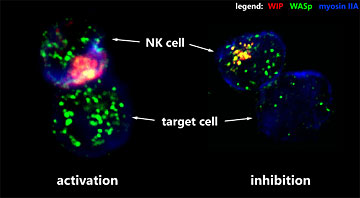
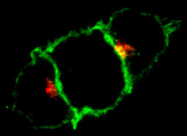

News Archives : 2006 : Natural Killers Have a Complex
by Konrad Krzewski and Jack Strominger
June 19, 2006

Natural killer (NK) cells comprise a relatively small subset of lymphocytes (~15%). Nonetheless, they play a very important role in host defense against tumors and viral infections. In addition, they contribute to generation of antigen-specific immune response through production of chemokines and cytokines, such as interferon g. NK cells can directly recognize a tumor or an infected cell and kill it by secretion of granules containing lytic enzymes or by triggering apoptosis. Although the mechanism of their action (i.e. killing of target cell) is similar to that of cytotoxic T lymphocytes, NK cell are quite different from T cells. NK cells don’t have the T cell receptor (TCR) and, contrary to T cells, they recognize and attack only cells without MHC class I proteins.
NK cell activity is regulated by a variety of both activating and inhibitory receptors. Activation of NK cells is mediated through interaction of NK cell surface activation receptors with their ligands expressed on the surface of target cells. This involvement triggers a complex and highly regulated response that leads to cytolytic granule release, resulting in death of a target cell. Alternatively, interaction of an inhibitory receptor with its ligand negatively regulates the NK cell activity. One group of inhibitory receptors, belonging to the immunoglobulin superfamily, is known as killer cell immunoglobulin-like receptors (KIRs). KIR recognizes MHC class I molecules as inhibitory ligands and is involved in early termination of the NK cell activity through the recruitment of phosphatases to its cytoplasmic tail after ligation.
Although regulation of NK cell activation is well studied, little is known about downstream targets of inhibitory signaling through the phosphatases. The actin cytoskeleton could be a plausible target of KIR inhibitory receptors, as its rearrangements are absolutely necessary for formation of the cell-cell conjugate and NK cell cytotoxicity. A key regulatory protein involved in actin polymerization is the Wiskott-Aldrich Syndrome protein (WASp; WAS patients are very susceptible to microbial infections, because they have mutations in the WASp gene resulting in severe deficiency in their lymphocyte functions). WASp activity is modulated by a variety of adaptor and regulatory proteins, including the WASp interacting protein (WIP). WIP has been suggested to take part in actin polymerization through regulation of WASp activity.
In our recent study (Krzewski et al., J Cell Biol 173, 121-32, 2006) we discovered a huge (~ 1.3 megaDa) multiprotein complex comprised of WASp (actin polymerization factor), WIP (WASp activity regulator and filamentous actin stabilizing protein), myosin IIA (actin motor protein) and actin. This multiprotein complex, formed during NK cell activation, was affected by KIR inhibitory signaling. The complex was found to move to the cell-cell contact site (immune synapse) in response to NK cell activation, while KIR inhibitory signaling prevented that relocalization. In addition, recruitment of actin and myosin IIA to the WIP-WASp complex as a result of NK cell activation was specifically decreased after induction of an inhibitory signal.
Multiprotein complex assembly is likely dependent on WIP phosphorylation. WIP phosphorylation (mediated by PKCq) increased greatly during NK cell activation, but was suppressed by KIR inhibitory signaling. WIP phosphorylation or dephosphorylation in turn affected recruitment of myosin IIA and actin. Confirming WIP’s crucial role, knock-down of WIP expression in NK cells negatively affected multiprotein complex formation and completely inhibited NK cell cytolytic activity.
Since KIR signaling affected proteins critical for actin rearrangements,, the actin cytoskeleton is clearly a target of NK cell inhibitory signaling. Whether inhibitory signaling affects the cytoskeleton directly, by dephosphorylating one or more of its components, or indirectly by targeting regulatory molecules (e.g. adaptors and kinases) or both is still not known.
Discovery of the multiprotein complex, regulated by activating and inhibitory signaling, provides a first step in understanding cytoskeletal rearrangements essential for cytolytic lymphocyte activity.
 In activated NK cells (left) proteins involved in actin cytoskeleton rearrangements (WASp, WIP, myosin IIA) readily move to the cell-cell contact site, also known as the immune synapse. As a result, target cell will be killed (lysed). However, induction of KIR signaling by recognition of KIR ligand on the surface of target cell leads to inhibition of NK cell activity and prevents actin cytoskeleton proteins from translocation (right). Consequently, the target cell will be spared. |
 |